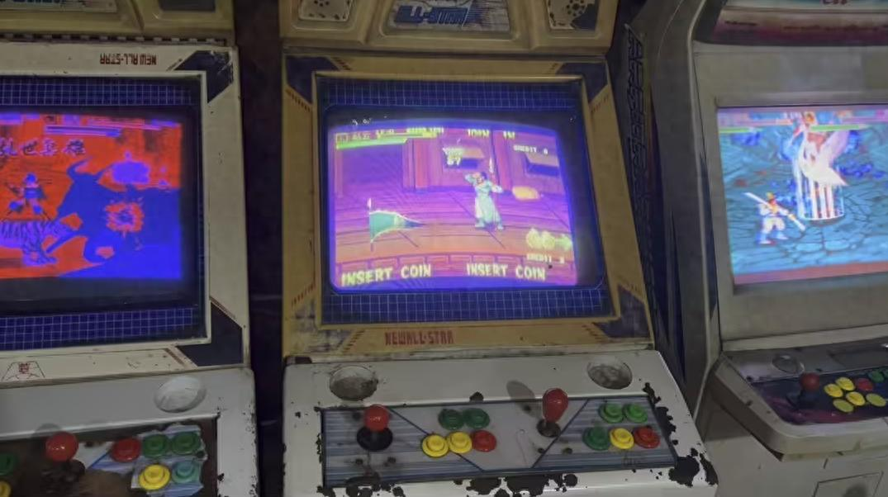

街机厅六条不死规矩！碰一条轻则挨骂重则直接关机
八十年代末，兜里攥着五毛一换四五个街机币，那是咱们穷小子最快乐的魔法时刻。屋子里混着机油汗味和廉价香烟的呛人气儿，一群半大孩子为了抢机位挤得满头汗，起哄声能把房顶掀了。可你发现没有？老板没贴告示也没说话，但谁要是踩了红线，旁边观战的大哥能直接伸手断电！今天翻出老照片聊聊那些不成文的"死规矩"，看看你小时候敢不敢违抗？那时候总觉得玩就是理，后来才明白集体沉默比老板吼声还吓人。
要说游戏厅里最抢手的位置，永远是《拳皇97》那台格斗机，机子一开准围得里三层外三层。当年玩家之间默认一条铁律：不许裸杀。说白了就是不能啥连招都不接，上来直接甩超必杀，因为那会儿不少人物大招判定太赖，纯靠这手赢人一点含金量都没有。但凡把对手打晕了，占上风的一方都得老老实实站着等对方醒过来，没人会追着放必杀。遇上霸机高手对决，谁要敢裸杀耍赖，边上观战的能集体数落你，哪怕输了也得守住对手的尊严，这才是大伙儿认可的街机厅规矩。

《三国志2》打完夏侯惇那关，会弹出大伙儿又爱又愁的吃包子奖励关，二十秒限时里堆满包子烤肉，吃得越多得分越高。但这关是所有老板的心头大患，大伙儿玩命摇摇杆砸按键，时间一长摇杆松脱、弹簧拍断，机器一坏就得停工。后来老板立下死规矩：不许猛转摇杆，否则直接拉电关机，机器侧面贴着手写小纸条警告。可我们还是忍不住偷偷转，只是改成慢慢点按键，生怕闹出动静被发现。那窒息感现在想起来都后背发凉，比被老妈揪耳朵还刺激。
《恐龙快打》第四关开车场景结束进门时，地上有块发光小石头，当年所有玩家都传捡了它BOSS血量和攻击会直接翻倍。虽然如今知道是假的，可当时谁敢赌啊？打到这一段所有人刻意绕开走，要是哪个萌新手快捡起来，队友当场停手不动，脾气冲的直接关机重开。我第一次不懂规矩顺手就捡了，组队的高年级男生围着我念叨半天，自那以后我离那块石头远远的，再没敢碰过。
《西游释厄传》里第一关平顶山那尊金色弥勒佛也特容易闹矛盾，推开会掉法宝，可瞬间刷出一大群飞鸟小怪干扰输出。要是队友打算留道具打BOSS，你自顾自把佛像推开，那就等着队友挂机吧！《铁钩船长》第二关的马蜂窝是全屏清怪神器，玩家间默认归娃娃捡，别的角色抢先拿走，队友准会故意引小怪撞你，严重的直接关机重开。
现在随便下个模拟器就能玩到这些老街机，再不用攥着零钱排队，也不会因为一块石头跟陌生人生气了。可自己玩时总超不过十分钟就索然无味，或许我们怀念的并不是游戏本身，而是那个烟雾缭绕的屋子、此起彼伏拍摇杆的哐当声，还有一群为输赢较真的玩伴吧。各位老男孩，当年你在街机厅踩过哪条红线？评论区晒晒你的"挨骂经历"！
关于我们
📱 公众号名称：三天笔记
✍️ 作者：曾三天
扫码关注公众号，获取每日最新资讯

商务合作与版权
商务合作 / 内容投稿 / 品牌推广
请关注公众号「三天笔记」后台留言联系
版权声明：本文由作者整理，转载需注明出处。